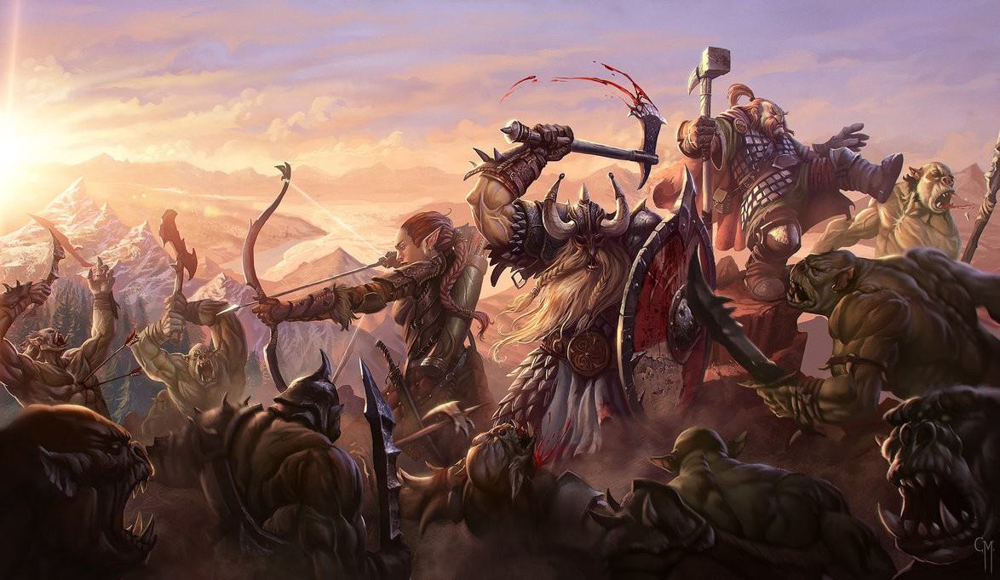

Dungeons&Dragons
Dungeons&Dragons é um role-playing game, também conhecido como RPG (em português: "jogo narrativo", "jogo de interpretação de papéis" ou "jogo de representação"), é um tipo de jogo em que os jogadores assumem papéis de personagens e criam narrativas colaborativamente. O progresso de um jogo se dá de acordo com um sistema de regras predeterminado, dentro das quais os jogadores podem improvisar livremente. As escolhas dos jogadores determinam a direção que o jogo irá tomar.
Os RPG são tipicamente mais colaborativos e sociais do que competitivos, embora vários deles sejam competitivos. Um jogo típico une os seus participantes em um único time que se aventura como um grupo. Um RPG ocasionalmente não tem ganhadores ou perdedores. Isso o torna fundamentalmente diferente de outros jogos de tabuleiro, jogos de cartas colecionáveis, esportes, ou qualquer outro tipo de jogo.
Existem várias formas de RPG. A forma original, às vezes chamada de RPG de mesa (tabletop RPG em inglês), é conduzida através de discussão, enquanto que live-action RPG (LARP) os jogadores executam fisicamente suas ações de personagens. Em ambas as formas, um arranjador chamado mestre de jogo geralmente decide as regras e configurações a serem usadas, atuando como árbitro, enquanto cada um dos outros jogadores desempenha o papel de um único personagem.
Conceito
O RPG é um jogo pouco convencional quando comparamos aos jogos habituais. No teatro, você interpreta uma personagem de ficção, seguindo o enredo definido em um roteiro; já em um jogo de estratégia, você está seguindo um conjunto de regras onde, para vencer, você precisa vencer desafios impostos por seus adversários - cada partida é única, já que é impossível prever seus movimentos durante o jogo. No RPG, esses dois universos se unem.
Como em um jogo de estratégia, há regras que o definem, e guiam aquilo que o seu personagem pode ou não fazer. A esse conjunto de regras chama-se sistema. Como no teatro, cada personagem tem uma história, e deve ser interpretado assim como fazem os atores. Diferente de um jogo de estratégia, você não luta contra um adversário específico, mas vive aventuras em um mundo imaginário. Diferente do teatro, você não segue um roteiro, mas age pelo seu personagem com liberdade de ação, limitado somente pelo conjunto de regras do sistema em questão.
Um grupo de RPG pode ter de duas a dez pessoas, às vezes mais. Não existe um número específico, embora a maioria dos grupos tenha uma média de 4 até 6 integrantes. No RPG, existem dois tipos básicos de participantes muito bem definidos: O primeiro tipo é o jogador personagem, normalmente chamado apenas de "jogador", do Inglês "Player". Ele é quem cria um personagem fictício, seguindo as regras do sistema escolhido por seu grupo, e controlará esse mesmo personagem pelas aventuras do jogo. (Em alguns Jogos de Interpretação, jogadores podem controlar mais de um personagem simultaneamente, embora seja incomum.)
O segundo tipo de jogador é o narrador, mestre ou GM (Game Master). Será ele quem criará a história e julgará as ações de todos os personagens do jogo. O narrador normalmente não possui um personagem próprio, mas controla todos os personagens não-jogadores da aventura - que seriam os coadjuvantes da peça de teatro. Enquanto o jogador tem uma atuação assemelhada àquela de um ator de teatro, o narrador seria o diretor e roteirista, aquele que define o cenário, figurantes, ambiente e tudo mais.[4] Por isso mesmo, o narrador é aquele que deve conhecer as regras mais profundamente, e deve ser o mais experiente do grupo, normalmente seguindo um sistema de regras pré-determinado que o ajudará com os eventuais problemas e dúvidas que venham a surgir. Apesar do narrador seguir as regras de um sistema, ele pode quebrá-las, ignorá-las ou mudá-las em prol de uma fluidez no andamento da partida, baseando-se para isso no seu bom senso. Conhecer o máximo possível sobre o sistema facilita esse processo e evita arbitrariedades.
Cada sessão de RPG pode ser chamada de uma aventura. Uma sucessão de aventuras onde se usam os mesmos personagens mantendo a continuidade dos eventos torna-se uma "campanha".[7] Cada jogador cria o seu personagem baseado no mundo e em suas regras preestabelecidas, que o narrador/mestre determinou, e viverá nele as suas aventuras. Ao término de cada aventura, o personagem recebe pontos de experiência" (XPs), que representam o seu aprendizado. Estes pontos podem tornar o personagem mais forte, dando-lhe mais vantagens e habilidades. É por esse motivo que os mesmos personagens costumam ser usados em campanhas - uma vez que a progressão do personagem é evidente, diferente de várias aventuras isoladas em que cada personagem precisa ser feito do zero.
Existem muitos tipos diferentes de RPG, e cada um possui as suas próprias regras.[4] De forma geral, quando um jogador decide fazer alguma coisa, o narrador decide e narra para ele o resultado. Quando é uma ação complicada e/ou com grande chance de erro (como pular grande distância ou fazer uma acrobacia), o narrador pode exigir um teste, que é feito com uma jogada de dado. Estes representam o fator aleatório existente, a chance do personagem conseguir ou não realizar a ação pretendida. Cada sistema possui suas próprias regras para definir o sucesso ou falha de cada ação, calculando a probabilidade do resultado ser ou não favorável.
Raças
| Raças | Descrição |
|---|---|
| Anão | Reinos ricos de antiga grandeza, salões esculpidos nas raízes das montanhas, o eco de picaretas e martelos nas minas profundas e nas forjas ardentes, um compromisso com o clã e a tradição, e um ódio impetuoso contra goblins e orcs – essas linhas comuns unem todos os anões. |
| Elfo | Elfos são um povo mágico de graça sobrenatural, vivendo no mundo sem pertencer inteiramente à ele. Eles vivem em lugares de beleza etérea, no meio de antigas florestas ou em torres prateadas brilhando com luz feérica, onde uma música suave ecoa através do ar e fragrâncias suaves flutuam na brisa. Elfos amam a natureza e a magia, a arte e o estudo, a música e a poesia, e as coisas boas do mundo. |
| Halfling | Os confortos de um lar são os objetivos da maioria dos halflings: um lugar para viver em paz e sossego, longe de monstros saqueadores e embates de exércitos, com um fogo aceso e uma refeição generosa, e também uma bebida fina e boa conversa. Embora alguns halflings vivam seus dias em remotas comunidades agrícolas, outros formam bandos nômades que viajam constantemente, atraídos pela estrada afora e o vasto horizonte para descobrir as maravilhas de novas terras e povos. Mas mesmo esses halflings andarilhos amam a paz, a comida, uma lareira e um lar, mesmo que o lar seja em uma carruagem, empurrada ao longo de uma estrada de terra, ou uma balsa flutuando rio abaixo. |
| Humano | Nos confins da maioria dos mundos, os humanos são a mais jovem das raças comuns, chegando mais tarde no cenário mundial e com uma vida curta, se comparados aos anões, elfos e dragões. Talvez seja por causa de suas vidas mais curtas que eles se esforcem para alcançar o máximo que podem nos anos que têm. Ou talvez eles sintam que têm algo a provar às raças mais antigas, e é por esta razão que eles constroem seus poderosos impérios através da conquista e do comércio. O que quer que os motive, os humanos são os inovadores, os realizadores e os pioneiros dos mundos. |
| Draconato | Descendentes de dragões, como seus nomes demonstram, os draconatos andam orgulhosamente pelo mundo que os saúda com um temor incompreensível. Moldados por deuses dracônicos ou pelos próprios dragões, draconatos originalmente nasceram de ovos de dragão como uma raça única, combinando os melhores atributos de dragões e humanos. Alguns draconatos são servos fieis de dragões verdadeiros, outros formas as fileiras de soldados em grandes guerras e ainda existem os que encontram-se à toa, sem um objetivo claro na vida. |
| Gnomo | Um zumbido constante de atividades permeia a vizinhança onde os gnomos formam suas comunidades privadas. Barulhos estrondosos pontuam o zumbido: um tilintar de engrenagens moendo aqui, uma pequena explosão ali, um grito de surpresa ou comemoração e, principalmente, muitas gargalhadas. Gnomos regozijam a vida, apreciando cada momento de invento, exploração, investigação, criação e brincadeira. |
| Meio-Elfo | Vagando entre dois mundos mas, na verdade, não pertencendo a nenhum dos dois, meio-elfos combinam o que alguns dizem ser as melhores qualidades dos seus parentes elfos e humanos: a curiosidade, inventividade e ambição humanas temperadas pelos sensos refinados, amor a natureza e gostos artísticos dos elfos. Alguns meio-elfos vivem entre os humanos, separados por suas diferenças emocionais e físicas, vendo seus amigos e amores envelhecer enquanto o tempo malmente os toca. Outros vivem entre os elfos, crescendo impacientes à medida que atingem a maturidade nos reinos élficos intermináveis, enquanto seus amigos continuam a viver como crianças. Muitos meio-elfos, incapazes de se encaixar em nenhuma dessas sociedades, escolhem uma vida solitária, vagando ou se juntando a outros desafortunados e adentrando uma vida de aventura. |
| Meio-Orc | Quer estejam unidos sob a liderança de um poderoso bruxo ou estejam lutando por um impasse após anos de conflito, tribos orcs e humanas as vezes formam alianças, unindo forças em uma vasta horda para o pavor das terras civilizadas próximas. Quando essas alianças são seladas através do casamento, os meio-orcs nascem. Alguns meio-orcs crescem e se tornam orgulhosos comandantes de tribos orcs, seu sangue humano concedem a eles um diferencial perante seus rivais orcs de sangue puro. Alguns arriscam sair pelo mundo para provar seu valor entre os humanos e outras raças mais civilizadas. Muitos desses se tornam aventureiros, adquirindo renome pelos seus poderosos feitos e notoriedade por seus costumes bárbaros e fúria selvagem. |
| Tiefling | Ser recebido com olhares e cochichos, sofrer violência e insultos nas ruas, ver a desconfiança e medo em cada olhar: esse é o fardo do tiefling. E para completar tudo, os tieflings sabem que isso é graças ao pacto feito gerações atrás que infundiu a essência de Asmodeus – senhor supremo dos Nove Infernos – em sua linhagem. Sua aparência e natureza não é culpa deles, mas é o resultado de um pecado ancestral, pelo qual eles, seus filhos e os filhos de seus filhos serão eternamente responsabilizados. |